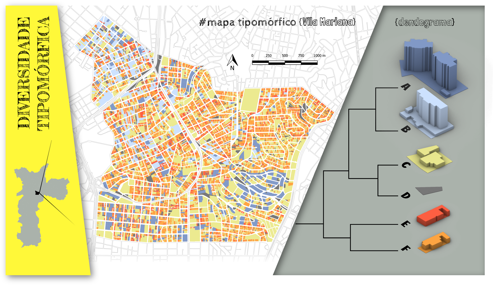
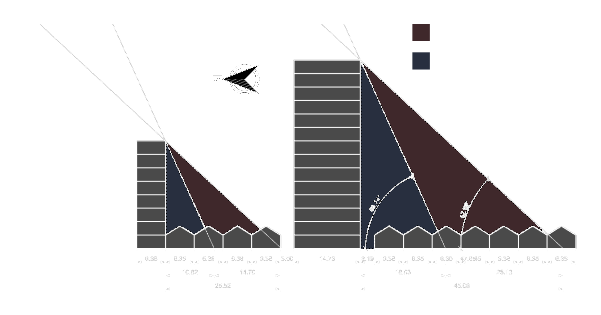

COMPLEXIDADE
NA CIDADE:
O paradoxo dos índices urbanísticos
por Fernando Gomes
Orientador: Prof. Dr. Leonardo Loyolla

http://bit.ly/complexidademorfologica
#sumário
#introdução {2 capítulos}
#justificativa {2 capítulos}
#objetivo
#método
#resultados
#considerações_finais
#referências, #apendices, #anexos, ...
#introdução {Que tipo de problema é a cidade?}

"Esse livro é um ataque ..." (JACOBS, 1961, p. 1)
título do último capítulo
"Que tipo de problema é a cidade?"
#introdução {Que tipo de problema é a cidade?}
“Como as ciências biológicas, as cidades são problemas de complexidade organizada.”
(JACOBS, 1961, p. 482))
#introdução {Que tipo de problema é a cidade?}
 A cidade não é uma árvore. Não no sentido literal de galhos e folhas, mas no sentido abstrato de estrutura (ALEXANDER, 1961)
A cidade não é uma árvore. Não no sentido literal de galhos e folhas, mas no sentido abstrato de estrutura (ALEXANDER, 1961)
- arquiteto, urbanista e matemático austríaco
- 4.000 páginas de textos publicados, além dos 13 livros escritos durante décadas de pesquisa
- ementas das matérias dos cursos de arquitetura no Brasil?
- "Uma linguagem de padrões"
 Diagrama produzido pelo próprio autor, referênciando a clássica comparação de Alexander (1961)
Diagrama produzido pelo próprio autor, referênciando a clássica comparação de Alexander (1961)
#introdução {complex(c)idade}
 “Complexidade é um tecido (complexus: o que é tecido junto) de constituintes heterogêneas inseparavelmente associadas: ela coloca o paradoxo do uno e do múltiplo.”
(MORIN, 2015, p. 13)
“Complexidade é um tecido (complexus: o que é tecido junto) de constituintes heterogêneas inseparavelmente associadas: ela coloca o paradoxo do uno e do múltiplo.”
(MORIN, 2015, p. 13)
#introdução {complex(c)idade}
“a cidade é a mais complexa das invenções humanas, … na confluência da natureza com o artefato” (LÉVI-STRAUSS, 1954, p. 137-138 apud MOUDON, 1997, p. 3)
#justificativa {o paradoxo}
 fonte: Próprio autor com dados do Geosampa. Áreas definidas como ZEU (Zonas Eixo de Estruturação da Transformação Urbana) pelo PDE (Plano Diretor Estratégico). As ZEUs somadas equivalem a aproximadamente a área total de muitos municípios de São Paulo como Itapevi, Itaquaquecetuba e Vinhedo
fonte: Próprio autor com dados do Geosampa. Áreas definidas como ZEU (Zonas Eixo de Estruturação da Transformação Urbana) pelo PDE (Plano Diretor Estratégico). As ZEUs somadas equivalem a aproximadamente a área total de muitos municípios de São Paulo como Itapevi, Itaquaquecetuba e Vinhedo
#justificativa {o paradoxo}
 fonte: Próprio autor com base na legislação da PMSP. Salientando os resultados de adensamento construtivos em um terreno hipotético com testada de 7 metros a esquerda e com 14 metros a direita.
fonte: Próprio autor com base na legislação da PMSP. Salientando os resultados de adensamento construtivos em um terreno hipotético com testada de 7 metros a esquerda e com 14 metros a direita.
#justificativa {O paradoxo}

fonte: Próprio autor com base dos dados georeferenciados do PDE no Geosampa.

fonte: produzido pelo autor com base na legislação da PMSP e potencial construtivo CA 4 em apenas uma torre com o mínimo gabarito necessário.
#objetivo {diversidade, cade você? ...}
fonte: Google Street View em janeiro de 2015 a esquerda e fevereiro de 2018 a direita, na Rua Humberto I, altura do número 1005#método { ... eu vim aqui só pra te ver}
😒 A forma segue a função
😍 A forma contém informação
#método {taxonomia numérica}
#resultados {A morfologia da Vila Mariana}
1,26 nonilhões (1,26 x 1030)
1.260.000.000.000.
000.000.000.
000.000.000
😱 😱 😱
Efeito Mega-Sena
fonte: wikimedia.org, bilhete da Mega-Sena ilustrando o efeito que a ilusão estatística pode gerar. fonte: próprio autor, proporção numérica de grupos de tipos encontrados no distrito da Vila Mariana
fonte: próprio autor, proporção numérica de grupos de tipos encontrados no distrito da Vila Mariana
 fonte: wikimedia.org, peça de lego ilustrando o pequeno lote como um comoditie
fonte: wikimedia.org, peça de lego ilustrando o pequeno lote como um comoditie
{para o equilíbrio, mudanças mínimas}
 fonte: PopulumRH.com. Ilustração representando que pequenas variações podem reestabelecer ou comprometer o equilíbrio.
fonte: PopulumRH.com. Ilustração representando que pequenas variações podem reestabelecer ou comprometer o equilíbrio.
#resultados{morfologia com óculos de complexidade}
 fonte: Próprio autor. Elevação esquemática do sombreamento gerado por dois edifícios na Vila Mariana, no período de um ano, no momento do dia em que o sol está mais alto. A esquerda um edifício proposto com 8 pavimentos sem recuos laterais e a direita um edifício com 14 pavimentos, recuado do lote vizinho por 3 metros conforme a legislação vigente.#resultados{morfologia com óculos de complexidade}
 fonte: AutoEsporte (g1.com) "Inglês entra para o Guinness ao fazer baliza de ré mais apertada do mundo"
fonte: Proprio autor. Dimensão de uma vaga de veículo de passeio, ainda são necessários mais pelo menos 3 metros para o espaço de manobra, quano o ideal seriam mais 5 metros, totalizando 10 metros.
fonte: AutoEsporte (g1.com) "Inglês entra para o Guinness ao fazer baliza de ré mais apertada do mundo"
fonte: Proprio autor. Dimensão de uma vaga de veículo de passeio, ainda são necessários mais pelo menos 3 metros para o espaço de manobra, quano o ideal seriam mais 5 metros, totalizando 10 metros.
#resultados{morfologia com óculos de complexidade}
 fonte: clickapartamentos.com.br. "Este empreendimento está sendo considerado uns dos mais interessantes de São Paulo. O Curitiba 381 mistura requinte e muita sofisticação em um só lugar. Situada em região nobre de São Paulo com vista privilegiada para o parque do Ibirapuera"
fonte: clickapartamentos.com.br. "Este empreendimento está sendo considerado uns dos mais interessantes de São Paulo. O Curitiba 381 mistura requinte e muita sofisticação em um só lugar. Situada em região nobre de São Paulo com vista privilegiada para o parque do Ibirapuera"
#considerações_finais{... mudanças mínimas}
 fonte: mrlovenstein.com. Inspirado no efeito borboleta descoberto por Lorenz.
fonte: mrlovenstein.com. Inspirado no efeito borboleta descoberto por Lorenz.
#considerações finais {Praxis}
“não há revolução com verbalismo, nem tampouco com ativismo, mas com práxis, portanto, com reflexão e ação incidindo sobre as estruturas a serem transformadas” (FREIRE, 1987, p.122)
#obrigado {@feromes}